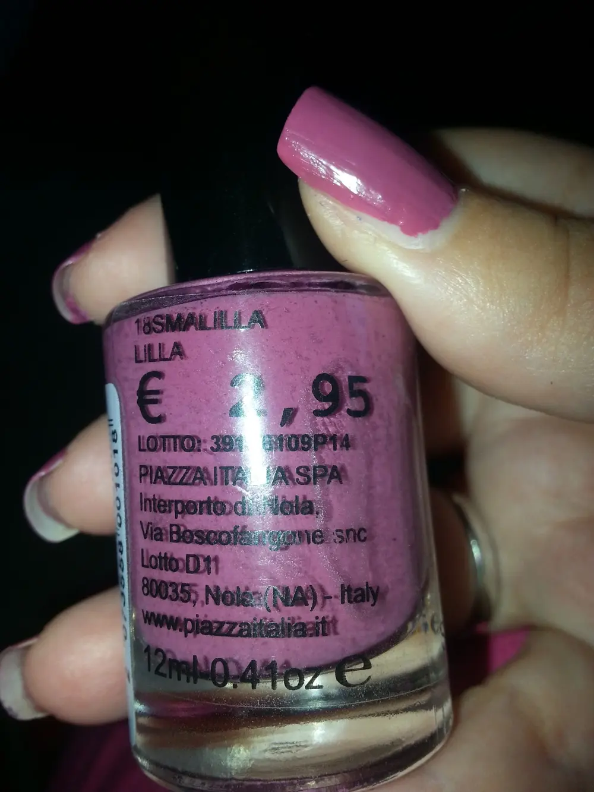
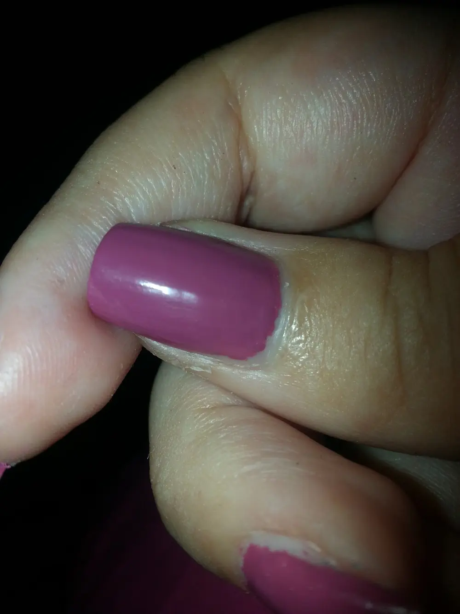
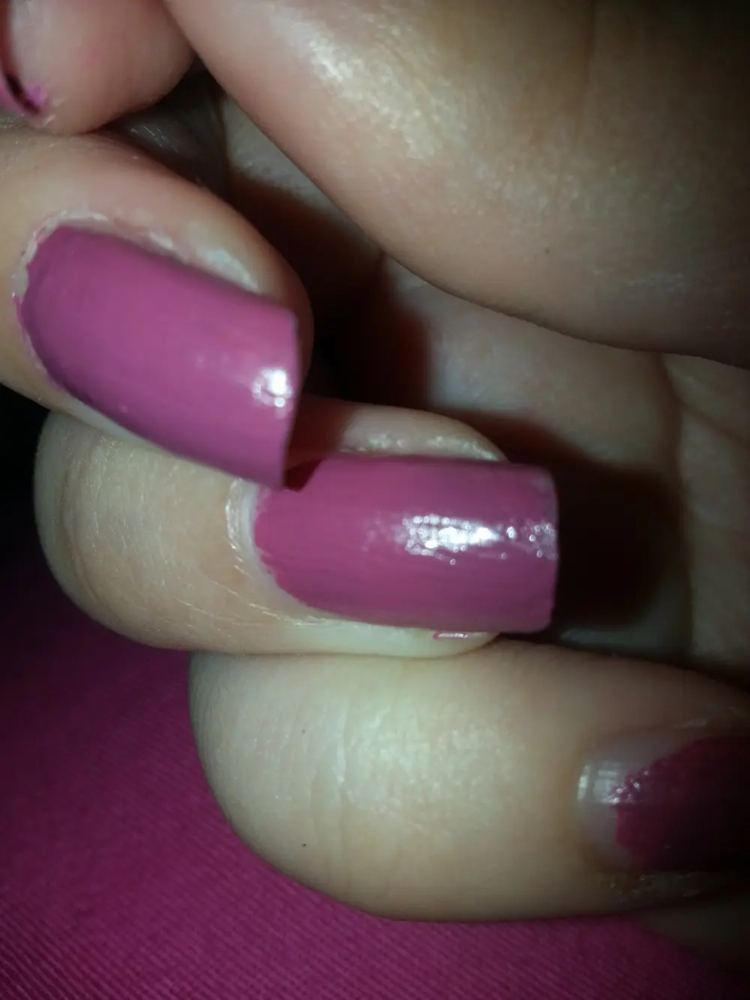
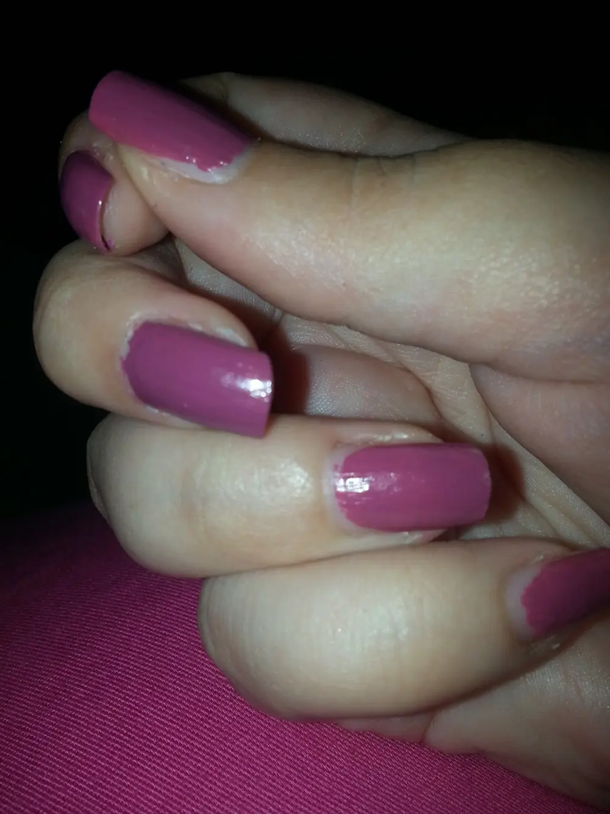

Smalto Piazza Italia 18smalilla lilla
Salve ragazzeeeee
ma avete sentito che caldo oggi? E pare che le temperature si alzeranno ancora. .un forno praticamente. .
Beh, visto che che con quest'afa non si respira da ben 2 settimane esatte e quindi io continuo a non truccarmi, ho pensato allora di provare uno smaltino che presi da Piazza Italia un mesetto fa. .
E il numero '18smalilla lilla ' . .davvero carino. .
E siccome è XXL l'ho pagato 2,95 € perché è uno smalto effetto gel. .

Io devo essere sincera. .
il mio giudizio su questo brand a livello di makeup è un tantino deludente. . Sarà il caldo, sarà stato uno smaltino che proprio perché è effetto gel, ma l'ho trovato che è abbastanza secco. .
Vi spiego: solitamente quando uno smalto è nuovo, ancora sigillato, alla prima passata è molto lucido e si stende che è una meraviglia, per questo smalto invece io ho avuto una piccolissima difficoltà. .
cioè ho dovuto fare più di una passata per non far sembrare che ci fossero delle striature. .
infatti sul pollice è bello lucido con 2 passate. .

Se notate in quest'altra foto l'anulare sembra che io abbia intaccato da qualche parte, cosa che non è successa. .
Avevo un pò di fretta e non ho fatto una doppia passata a tutte le dita. .

Ovviamente ragazze se passate un top coat il tutto è bello che risolto. .
Per quanto riguarda la durata è ottima. .
A differenza di molti altri brand dura bene. .
Questo è risultato su tutte le mie dita. .

E voi avete provato mai gli smalti Piazza Italia? Come vi siete trovate?